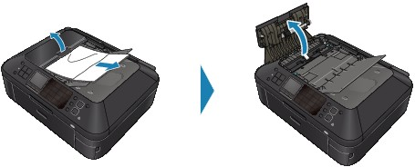
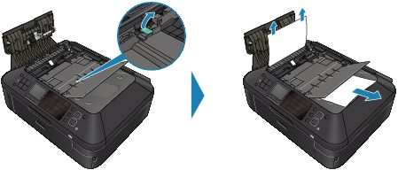
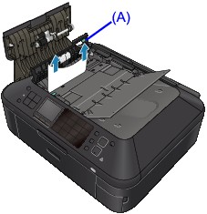

Important
Important-
When you turn off the machine to remove the jammed document, make sure of the following.
-
The power cannot be turned off while the machine is sending or receiving a fax, or when the received fax or the unsent fax are stored in the machine's memory.
Make sure if the machine completed sending or receiving all the faxes before disconnecting the power cord.
If you unplug the power cord, all the faxes stored in the machine's memory are deleted.
-
If the Stop button is pressed while the machine is scanning the document:
If you press the Stop button during scanning then the document remained in the ADF, the message about the paper remained in the ADF appears on the LCD. Press the OK button so that the remaining document is automatically fed out.
Removing the jammed document from the Document Tray:
Remove the document following the procedure below.
-
If printing is in progress, press the Stop button.
-
Turn off the machine.
-
If a multi-page document is loaded, remove any pages other than the jammed page from the ADF, then open the Document Feeder Cover.
 -
Raise the Paper Release Lever, then pull out the jammed page in the ADF, either from the Document Tray or from the Paper Output Slot, whichever is easier.
If the document cannot be pulled out with ease, raise the Document Cover and pull out the jammed page from the inner side of the Document Cover.
After pulling out the jammed page, close the Document Cover.
 Note
Note-
When checking whether a piece of paper remains inside the ADF, see In Other Cases:.
-
-
Close the Document Feeder Cover, then turn on the machine.
When rescanning the document after clearing the error, rescan it from the first page.
If you cannot remove the document or the document tears inside the machine, or if the document jam error continues after removing the document, contact the service center.
Note-
The document may not feed properly depending on the media type, or your environment, such as when the temperature and humidity are either too high or too low.
In this case, reduce the number of document pages to approximately half of the loading capacity.
If the document still jams, use the Platen Glass instead.
In Other Cases:
If you cannot find the jammed page or you want to remove the piece of paper after checking whether it remains inside the ADF, follow the procedure below.
-
If printing is in progress, press the Stop button.
-
Turn off the machine.
-
If a multi-page document is loaded, remove any pages other than the jammed page from the ADF.
-
Open the Transport Cover (A), then remove the jammed page or the piece of paper that remains inside the ADF.
 -
First close the Transport Cover, next close the Document Output Slot, then turn on the machine.
When rescanning the document after clearing the error, rescan it from the first page.
If you cannot remove the document or the document tears inside the machine, or if the document jam error continues after removing the document, contact the service center.